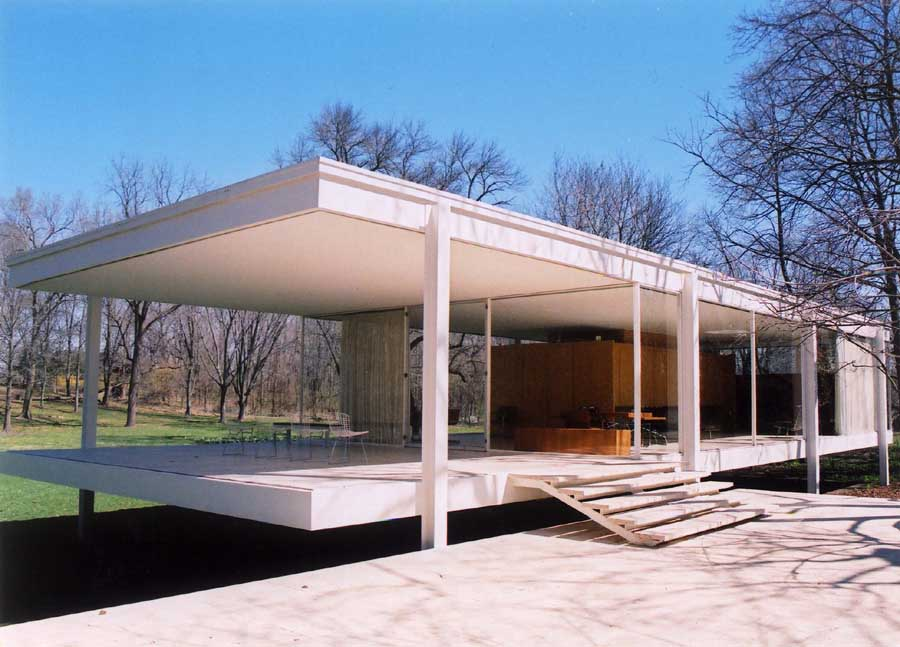
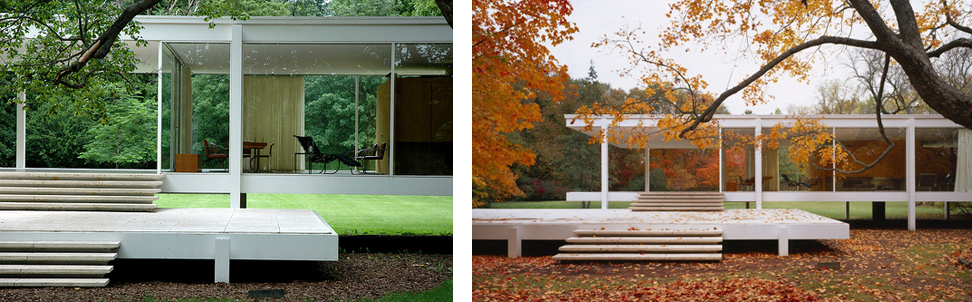

Farnsworth House
Designed and built by Ludwig Mies van der Rohe from 1946 to 1951, Farnsworth House is considered a paradigm of international style architecture in America. Ludwig van der Rohe was retained by Dr. Edith Farnsworth to design a one-room weekend retreat in a once-rural setting, located 55 miles (89 km) southwest of Chicago's downtown on a 60-acre (24 ha) estate site. The Farnsworth House is considered a seminal example of International Style architecture as it was introduced to the United States.
As van der Rohe quotes:
'The essentials for living are floor and roof. Everything else is proportion and nature.'The house was created in order to enable its inhabitants to experience the rural silence and the passing of the seasons. 
The essential characteristic of the house is immediately apparent: the interior appears to be a single open room.
The extensive use of clear floor-to-ceiling glass opens the interior to its natural surroundings to an extreme degree.
The building is essentially one large room filled with freestanding elements.
Click here to watch the house 3D model development.
Sources: en.wikipedia - it.wikipedia - columbia.edu